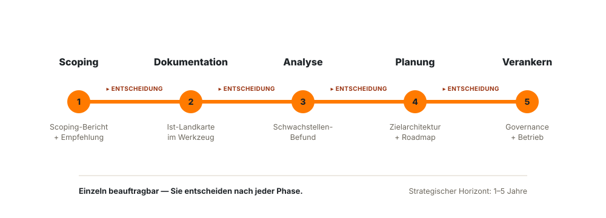

Enterprise Architecture als Prozess
Wir klären im Scoping, was Ihre Unternehmensarchitektur künftig leisten soll und realistisch leisten kann. Danach definieren wir Dokumentation, Analyse, Planung und Umsetzung als laufenden Prozess und verankern Zielarchitektur, operative Architekturprozesse, Rollen, Schnittstellen und Quality Gates synchron mit strategischen Vorgaben.
Unternehmensarchitektur scheitert, wenn Zielbild, Arbeitsprozess, Betrieb und Projektalltag getrennt laufen.
Eine Zielarchitektur allein reicht nicht. Wirksam wird Enterprise Architecture erst, wenn klar ist, was sie leisten soll, wie Dokumentation, Analyse, Planung und Umsetzung ablaufen und wie operative Projekte und Betrieb diese Leitplanken wirklich nutzen.

Ein Zielbild ohne Prüfmechanismus
Die Zielarchitektur wird einmal beschlossen, aber nicht regelmäßig überprüft. Neue Anforderungen, Lieferantenentscheidungen oder auslaufende Software verändern die Lage, ohne dass die Architektur angepasst wird.
Dokumentation, Analyse und Planung ohne Prozess
Es ist nicht geklärt, wie dokumentiert, analysiert und geplant wird. Dann hängt die Architektur an Einzelpersonen, wird uneinheitlich gepflegt und verliert schnell ihren Wert für Entscheidungen.
Operative Architektur ohne strategische Leitplanken
Projektportfolio-Management, Projektarchitekten, Requirements Engineering, Lösungsarchitektur und Betrieb treffen parallel Entscheidungen. Ohne enge Abstimmung entstehen Doppelprozesse, Risiken und Cloud- oder Technologieentscheidungen ohne strategische Linie.
Was wir gemeinsam aufsetzen und begleiten.
Nach dem Scoping geht es nicht nur um Architektur-Inhalte, sondern auch um die Arbeitsweise: Wie wird dokumentiert? Wie wird analysiert? Wie wird geplant und umgesetzt? Wer entscheidet, wer pflegt, welche Schnittstellen müssen funktionieren und an welchen Stellen greift ein Quality Gate?

Scoping und Leistungsbild
Wir klären mit den Verantwortlichen für Unternehmensstrategie, was die Unternehmensarchitektur heute und künftig leisten muss: Zielvorgaben, Investitionen, Projektportfolio, Cloud, Lifecycle oder künftige Veränderungen wie Merger & Acquisition.
Dokumentationsprozess
Wir definieren mit Ihrem Team, welche Architekturinformationen erfasst werden, wer sie liefert, wer sie pflegt und wie sie so abgelegt werden, dass sie für Entscheidungen nutzbar bleiben.
Analyseprozess
Wir legen fest, wie Anwendungen, Datenflüsse, Schnittstellen, Risiken, Redundanzen, technische Schulden und Abhängigkeiten bewertet und priorisiert werden.
Planung und Zielarchitektur
Wir entwickeln Zielszenarien und Roadmaps, um die IT-Landschaft zu stabilisieren, Konformität herzustellen und sie flexibler zu machen. Die Zielarchitektur kennt Ist und Soll aus strategischer Sicht und wird laufend nachgeführt.
Operative Architekturprozesse
Wir verzahnen Facharchitektur und Requirement Engineering, Lösungsarchitekturen sowie System- und Technologiearchitekturen für Projekte mit der strategischen Architektur.
Rollen, Schnittstellen und Quality Gates
Wir prüfen Rollen, Organisationsstruktur, Verantwortlichkeiten, Schnittstellen, Pflegeverantwortung und Umsetzungsfähigkeit. Quality Gates prüfen auch, ob Infrastruktur betrieben werden kann, Personal geschult ist und genug Kapazität vorhanden ist.
Zwei Mandatsblöcke: Scoping zuerst, danach Verankerung des iterativen Architekturmodells.
CEx startet mit einem klaren Scoping. Danach begleiten wir die Verankerung: Wir definieren mit Ihrem Team die Prozesse für Dokumentation, Analyse, Planung und Umsetzung und begleiten deren Durchführung, bis die Architekturarbeit im Alltag tragfähig läuft.
Leistung und Grenzen klären
Wir klären, welche strategischen Zielvorgaben die Unternehmensarchitektur tragen muss, was sie heute leisten kann und welche künftigen Veränderungen sie vorbereiten muss — etwa Wachstum, M&A oder neue Betriebsmodelle.
Arbeitsprozesse definieren
Gemeinsam mit Ihrem Team definieren wir, wie Dokumentation, Analyse, Planung und Umsetzung ablaufen: Inputs, Rollen, Review-Rhythmus, Entscheidungswege, Schnittstellen, Werkzeug und Pflegeverantwortung.
Ist-Landschaft belastbar erfassen
Wir begleiten die Erfassung von Anwendungen, Daten, Schnittstellen, Technologie, Verantwortlichkeiten und bestehenden Vorgaben so, dass sie später wirklich analysierbar sind.
Zielszenarien entwickeln
Wir analysieren Schwachstellen, Abhängigkeiten und Risiken, entwickeln Zielszenarien und führen sie zu einer Zielarchitektur mit nachvollziehbarem Umsetzungspfad zusammen.
Verankern und nachführen
Wir verankern den Zyklus im Betrieb: regelmäßige Reviews, event-getriggerte Anpassungen, Abstimmung mit Projektportfolio-Management, operative Architekturprozesse, Rollen, Schnittstellen und Quality Gates. Ihr Team bleibt danach handlungsfähig.

Wann Enterprise Architecture sofort Orientierung schafft.
Oft ist nicht die einzelne Architekturentscheidung das Problem, sondern die fehlende Verbindung zwischen Strategie, Betrieb, Projekten und laufender Pflege.

Architekturleistung klären
Wenn unklar ist, welche strategischen Zielvorgaben die Architektur tragen muss, welche Zukunftsszenarien sie vorbereiten soll und wo ihre realistische Grenze liegt.
Zielarchitektur entwickeln
Wenn Ist-Landschaft, Ziel-Szenarien, strategische Soll-Vorgaben und Umsetzungsreihenfolge noch nicht zusammenpassen.
M&A oder Wachstum vorbereiten
Wenn die Architektur künftige Integration, Skalierung oder neue Geschäftsmodelle tragen muss, bevor die Veränderung im Projektportfolio ankommt.
Hersteller stellt Updates ein
Wenn eine Software, Plattform oder Technologie nicht weiter aktualisiert wird und die Zielarchitektur angepasst werden muss.
Projektarchitekturen laufen auseinander
Wenn Projektportfolio- und Architekturteams parallel entscheiden und die Vorgaben der Unternehmensarchitektur nicht in die Projektumsetzung integriert werden.
Quality Gates und Rollen fehlen
Wenn Prozesse, Verantwortlichkeiten, Schnittstellen, Pflegeverantwortung, Freigabepunkte, Schulung und Betriebsfähigkeit im Projekt nicht klar genug geregelt sind.
Die wichtigsten Architektur-Rahmenwerke.
Welches Vorgehen passt, richtet sich nach Reife und Ziel.
TOGAF
Ein verbreitetes Rahmenwerk mit einem Vorgehensmodell für die Entwicklung von Unternehmensarchitektur. Stark, um Methode und gemeinsame Sprache in größere Vorhaben zu bringen. Herausgegeben von der Open Group.
ArchiMate
Eine standardisierte Modellierungssprache, um Geschäft, Anwendungen und Technik in einem zusammenhängenden Bild darzustellen. Ebenfalls von der Open Group gepflegt.
Zachman-Schema
Ein Ordnungsschema, das Architektur aus verschiedenen Perspektiven systematisch sortiert. Weniger Vorgehensmodell, mehr Denkraster für Vollständigkeit.
FEAF
Ein Referenz-Rahmenwerk für Architektur im öffentlichen Sektor, das gemeinsame Bausteine und Referenzmodelle vorgibt.
Gartner-Ansatz
Ein ergebnisorientierter, pragmatischer Ansatz, der Architektur konsequent an konkreten Geschäftsergebnissen ausrichtet.
Eine Zielarchitektur bleibt nur wirksam, wenn sie überprüft und angepasst wird.
CEx betrachtet Zielarchitektur nicht als einmalige Zeichnung. Sie wird regelmäßig geprüft und bei klaren Ereignissen angepasst — damit Planung, Investitionen und operative Projektentscheidungen zusammenbleiben.

Regelmäßige Überprüfung
Feste Reviews prüfen, ob Annahmen, Roadmap, Standards und Architekturentscheidungen noch zur geschäftlichen und technischen Lage passen.
Event-getriggerte Anpassung
Wenn ein Hersteller Updates einstellt, neue regulatorische Anforderungen entstehen oder ein größeres Projekt die Landschaft verändert, wird die Zielarchitektur gezielt nachgeführt. Eine strategische Neuausrichtung erfordert ebenfalls eine Überprüfung der Unternehmensarchitektur.
Historisierte Szenarien
Ist-Zustand, Zielszenarien und getroffene Entscheidungen bleiben über Zeitscheiben nachvollziehbar. So wird sichtbar, warum eine Entscheidung getroffen wurde und wann sie neu bewertet werden muss.
Was CEx von anderen Architektur-Beratungen unterscheidet.

Scoping vor Methode
Wir starten nicht mit einem Rahmenwerk, sondern mit der Frage, was Ihre Unternehmensarchitektur künftig leisten soll und was sie realistisch leisten kann.
Arbeitsprozesse statt Architektur-Ablage
Wir definieren mit Ihrem Team, wie Dokumentation, Analyse und Planung wirklich laufen: Rollen, Datenquellen, Review-Rhythmus, Pflege und Entscheidungspunkte.
Strategie und Projektarchitektur verzahnt
Wir verbinden Zielarchitektur, Facharchitektur, Requirements Engineering, Lösungsarchitektur und technische Projektarchitektur über klare Leitplanken und Quality Gates.
Drei Prinzipien für tragfähige Architekturarbeit.
Gute Enterprise Architecture entsteht nicht durch mehr Diagramme. Sie entsteht, wenn Fachbereich, IT, Betrieb, Projektteams und Architekturverantwortliche nach denselben Leitplanken arbeiten.

Arbeitsweise vor Werkzeug
Erst wenn klar ist, wie dokumentiert, analysiert, geplant und umgesetzt wird, entscheiden wir über Werkzeug, Modellierungstiefe und Datenstruktur.
Verzahnung mit Projekten
Projektportfolio-Teams müssen Anforderungen der Unternehmensarchitektur in die Projektumsetzung integrieren. Dafür braucht es enge Abstimmung, klare Vorgaben, Rückkopplung, Schnittstellen und Freigabepunkte.
Verantwortung und Pflege
Jede Architekturinformation braucht eine Quelle, Pflegeverantwortung und Review-Rhythmus. Zusätzlich muss klar sein, ob Systeme betrieben werden können, ob Personal geschult ist und ob ausreichend Kapazität vorhanden ist.
Strategische Zielvorgaben und Enterprise Architecture — wie sie zusammenspielen.
Unternehmensarchitektur braucht strategische Zielvorgaben. Sie muss den heutigen Ist-Zustand, den gewünschten Soll-Zustand und künftige Unternehmensentscheidungen kennen — etwa Wachstum, neue Geschäftsmodelle oder geplante Merger & Acquisition.
Verantwortliche für Unternehmensstrategie
Setzen die Zielvorgaben: Welche Fähigkeiten braucht das Unternehmen jetzt, welche künftig, welche Investitionen stehen an und welche strukturellen Veränderungen muss die Architektur tragen?
Enterprise Architecture
Übersetzt diese Zielvorgaben in Zielarchitektur, Zielszenarien, Roadmaps, Standards und operative Leitplanken. Beispiel: Wenn M&A geplant ist, muss die Architektur künftige Integration und Skalierung tragen können.
Strategische und operative Architekturprozesse müssen ineinandergreifen.
Die strategische Architektur gibt Ziele, Szenarien und Leitplanken vor. Projektportfolio-Management, Betrieb und operative Architektur müssen diese Vorgaben in die Projektumsetzung integrieren, sonst entstehen Doppelprozesse und Risiken.
Strategischer Zyklus
Dokumentation, Analyse, Planung und Umsetzung richten die Landschaft auf Zielarchitektur und Zielszenarien aus. Der Zyklus wird regelmäßig geprüft und bei relevanten Ereignissen angepasst.
Operative Architektur-Prozesslandschaft
Dazu gehören Facharchitektur und Requirement Engineering, Lösungsarchitekturen sowie System- und Technologiearchitekturen für Projekte.
Portfolio, Quality Gates und Umsetzung
Quality Gates prüfen nicht nur Zielbild und Standards, sondern auch Umsetzung: Betriebsfähigkeit der Infrastruktur, Schulung, Personalkapazität, Pflegeverantwortung, Schnittstellen und Change-Bedarf.
Fragen, die in den ersten Gesprächen immer kommen.
Wie startet ein Enterprise-Architecture-Mandat?
Was passiert nach dem Scoping?
Warum muss auch der Dokumentationsprozess definiert werden?
Wie bleibt eine Zielarchitektur aktuell?
Was gehört zur operativen Architektur-Prozesslandschaft?
Was sind Quality Gates in der Architekturarbeit?
Welche Rolle spielen Unternehmensstrategie und M&A?
Wie arbeitet Unternehmensarchitektur mit dem Projektportfolio zusammen?
Was hat Change Management mit Architektur zu tun?
Brauchen wir dafür ein bestimmtes Rahmenwerk wie TOGAF?
Arbeitet CEx auch mit bestehenden Architekturteams?
Enterprise Architecture › sauber scopen.
Der erste Schritt ist ein Gespräch über Ihre Architekturarbeit: Was soll sie künftig leisten, was kann sie leisten, und wo braucht Ihre Organisation zuerst Klarheit?
Erstgespräch anfragen →